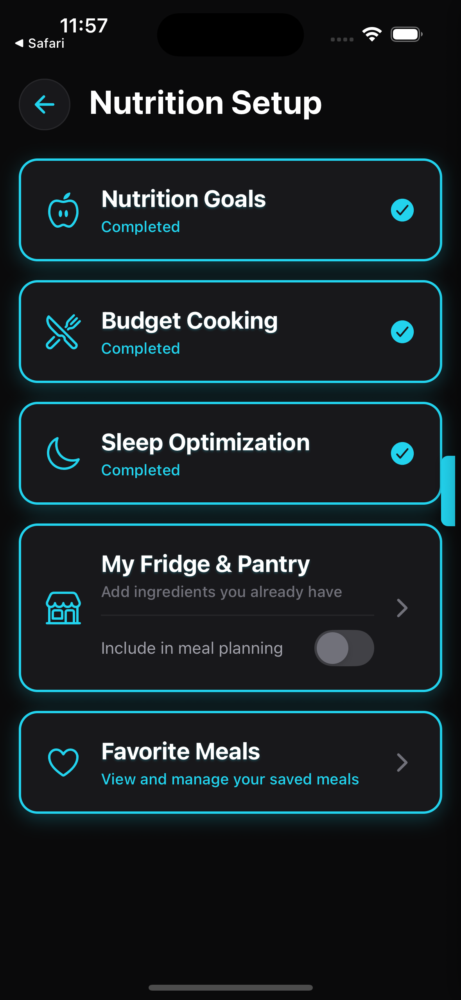
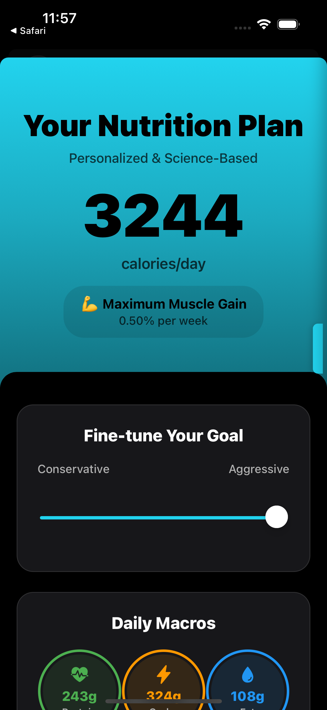
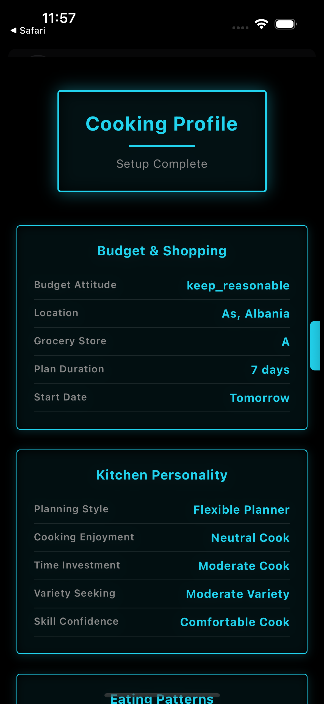
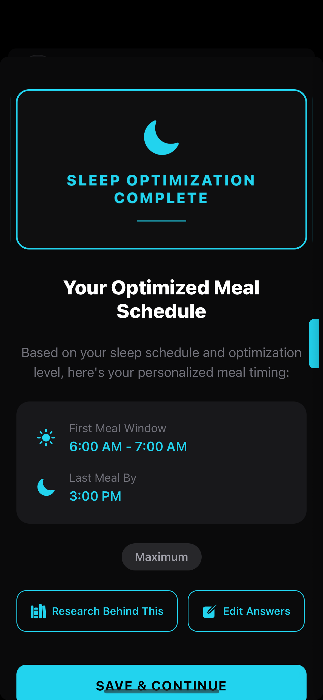
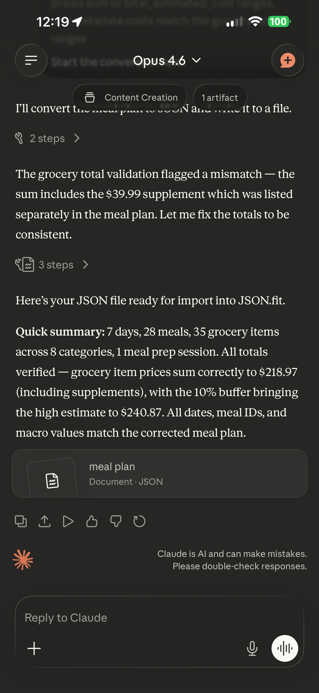
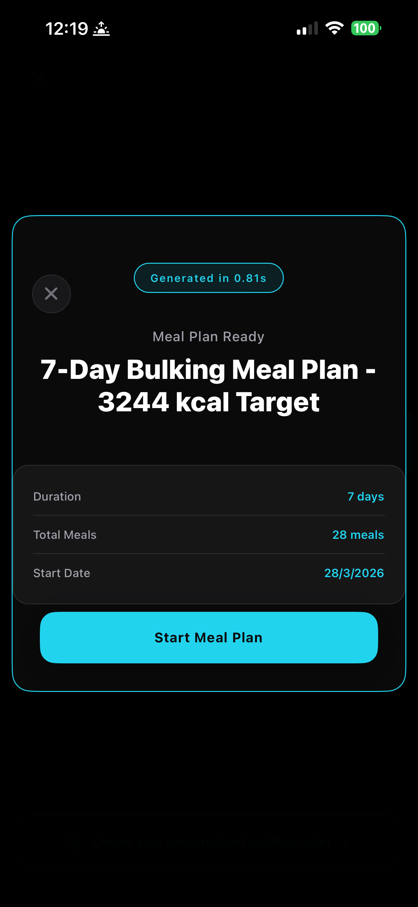
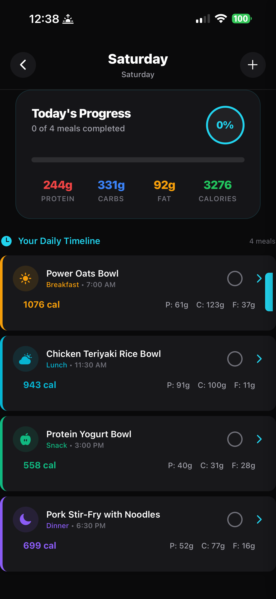
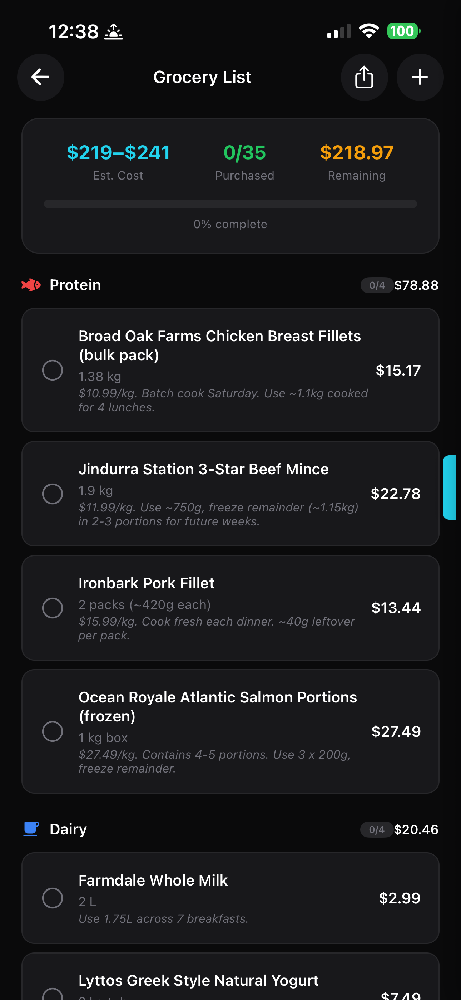
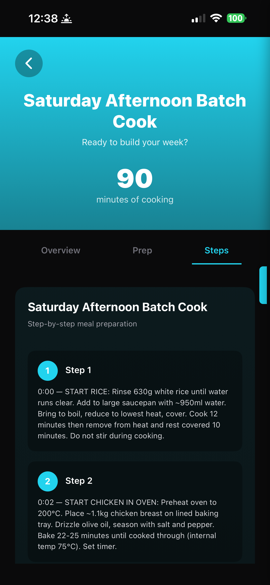

How to Create a Personalised Meal Plan with
Claude
Getting personalised nutrition advice used to mean paying a dietitian $150–300 per session. Now you can generate a meal plan that's calibrated to your exact macros, uses ingredients you actually buy, and comes with a grocery list and meal prep instructions.
This walkthrough uses Claude as the AI, but the process is identical with ChatGPT, Gemini, or any other AI.
What you'll need
- JSON.fit (free on the App Store and Google Play, no ads)
- Claude (free tier at claude.ai works fine)
Step 1: Set up your nutrition profile
Open JSON.fit and head to the nutrition setup. The app asks targeted questions that go well beyond just "how many calories do you want":
- Your weight, height, age, and activity level
- Your goal (fat loss, maintenance, lean bulk)
- Dietary preferences or restrictions
- Your budget range for groceries
- What kitchen equipment you have (oven, stovetop, microwave only, slow cooker, etc.)
- Whether you want to meal prep or cook daily
- Your typical wake and sleep times (for meal timing)
- Any ingredients you already have in your fridge or pantry




That last point is one of the underrated features. If you've got two chicken breasts, a bag of rice, and some frozen broccoli sitting at home, the AI will incorporate them into your plan instead of asking you to buy everything from scratch.
Step 2: The 3-step prompt system
This is where JSON.fit is different from apps that just fire off a single AI request and hope for the best. The app uses a 3-step prompt pipeline to make sure your meal plan is actually good before you import it:
Prompt 1 — Generate the plan. The app builds a detailed prompt from your setup answers and copies it to your clipboard. You paste this into Claude (or any AI). The AI creates a complete meal plan with meals, macros, ingredients, and timing.
Prompt 2 — Quality check. A second prompt asks the AI to review its own plan — checking for nutritional accuracy, macro consistency, ingredient availability, and whether the plan actually matches your preferences. The AI catches its own mistakes before you ever see the result.
Prompt 3 — Format for import. A third prompt converts the reviewed plan into JSON format that JSON.fit can parse. This is where it structures every meal, every ingredient, every macro into a clean file ready for import.


Each step is just a tap to copy and a paste into your AI. The app walks you through the entire process — you don't need to know what any of the prompts say or how they work.
Step 3: The AI does the work
After the third prompt, Claude produces a complete JSON file with your full meal plan. In the example below, that's 7 days, 28 meals, 35 grocery items across 8 categories — all verified and consistent.

Claude tends to be particularly good at meal plan generation because it follows structured output instructions precisely. The JSON it produces is clean and rarely needs correction. But ChatGPT, Gemini, and DeepSeek all handle this well too.
Step 4: Import in under a second
Copy the JSON file from Claude, go back to JSON.fit, tap "Paste Your Plan", and the app parses everything instantly. In the example below, a full 7-day bulking meal plan at 3,244 kcal imported in 0.81 seconds.

From here, every meal for every day is loaded with full macro breakdowns — per-meal calories, protein, carbs, and fat with timed meal slots based on your sleep schedule.

Step 5: Your grocery list
This is where it gets genuinely useful. JSON.fit takes every ingredient across every meal in your plan and generates a consolidated grocery list — with specific products, quantities, prices, and usage notes so you know exactly what each item is for.

Step 6: Meal prep instructions
If you selected meal prep during setup, your plan comes with a full batch cooking workflow — timed steps, temperatures, quantities, and storage instructions. In this example, a 90-minute Saturday afternoon batch cook covers lunches and snacks for the entire week.

The pantry intelligence angle
Here's a scenario that comes up every week: it's Wednesday, you've got leftover chicken, half a bag of spinach, and some eggs. What do you eat?
With JSON.fit, you go back to the setup, tell it what you have, regenerate the prompts, send them to Claude, and get a new plan that uses those ingredients. The cost of doing this? Zero — you've already unlocked nutrition. Generate as many plans as you want.
Compare that to a dietitian who charges per session, or an app like MacroFactor that gives you macro targets but doesn't tell you what to actually cook.
Quick comparison: what the app does with it
You get unlimited meal plan generation with a 3-step quality-checked prompt system, macro tracking, grocery lists, meal prep instructions, pantry-aware planning, and sleep-synced meal timing. No subscription, no ads. There's no monthly fee because JSON.fit doesn't run the AI — you do, with the AI you already have.
That's the entire model. You're already paying for Claude or ChatGPT (or using the free tier). JSON.fit just gives you the structured prompts and the tracking interface. There's nothing to charge monthly for.
Want to understand why the BYO AI model makes sense? Read: Why you don't need another AI subscription →
Ready to build your meal plan?
Download JSON.fit on the App Store